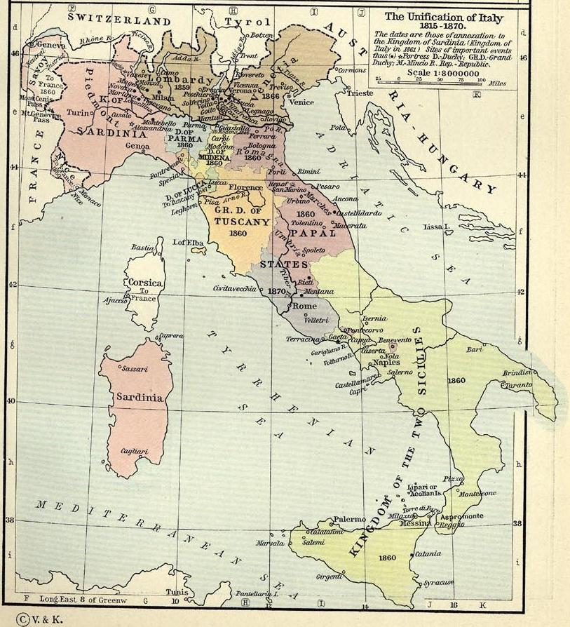
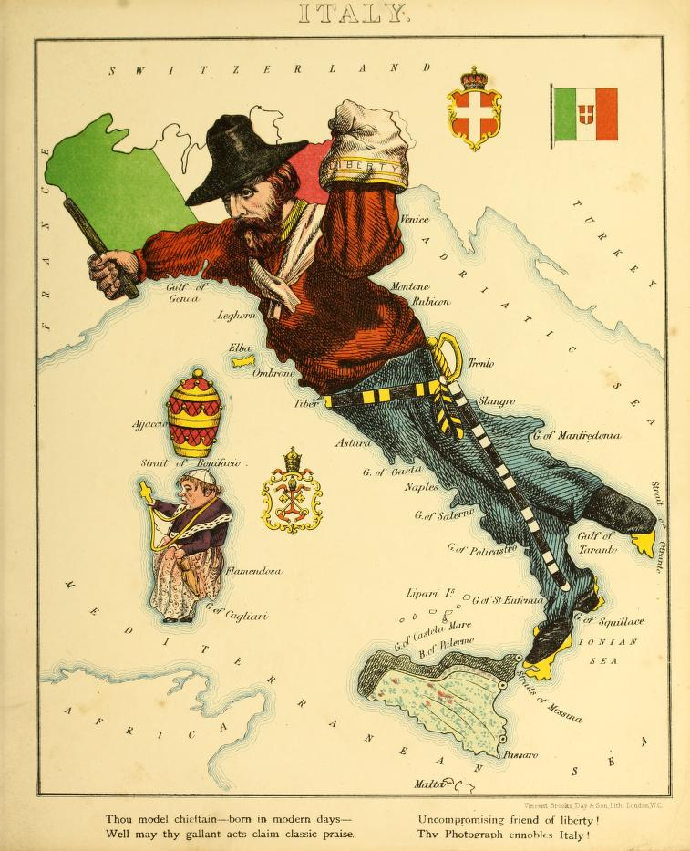

Crimean War
Historical Context
After the Napoleonic Wars (1803-1815), European powers were resolute in avoiding any future international conflict similar to Napoleon Bonaparte's military campaign. Symbolizing this new era of diplomacy, the Concert of Europe struggled to withstand the waves of revolution that soon erupted. Therefore, the 1815 Congress of Vienna sought to establish a world order grounded in international law, with the aim of maintaining public order and political stability. The police networks established across Europe during the Restoration period were limited in their effect in curbing growing unrest and political agitation.

1. Eugéne Delacroix, La Liberté guidant le people (Liberty Leading the People), 1830 – Louvre Museum
The Crimean War (1853-56) was a major military conflict fought primarily on the Crimean Peninsula between Russia and an alliance of the Ottoman Empire, Britain, France, and the Kingdom of Sardinia-Piedmont. The war fueled by tensions over the rights of Catholic and Orthodox Christians in Jerusalem and broader imperialist competition, exposed tensions among the European powers.

2. Victor Adam, Guerre d'Orient (War in the East) - Bibliothèque Nationale de France, RESERVE QB-370 (139)-FT4

3. Paris Peace Conference, 1856 – BOA FTG.F.269
The Crimean War ended in 1856 with the defeat of Russia. The following Treaty of Paris (1856) ushered in a new chapter in diplomacy with the hope to reshape the dynamics of European politics. It played a key role in legitimizing the postwar claims of the participating states. Austria lost its Balkan garrison. Russia's control over the Black Sea was weakened due to neutralization and free navigation. On the victorious side, Britain reinforced its position in European politics despite heavy war losses. France maintained its political influence until it was defeated in the 1870 Franco-Prussian War. By 1871, Italy emerged as a unified nation state after the Risorgimento period.

William Shepherd, Historical Atlas, New York: Henry Holt and Company, 1911

William Harvey, Geographical Fun, London: Hodder and Soughton, 1868.
Timeline
Major events of the Crimean War:

Encyclopedia Britannica